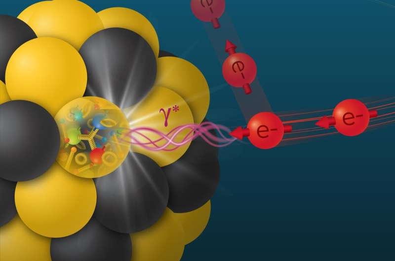
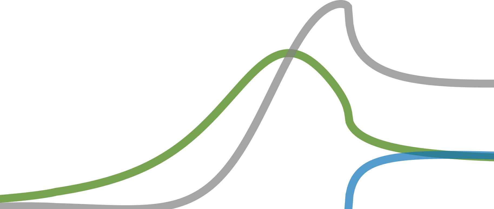
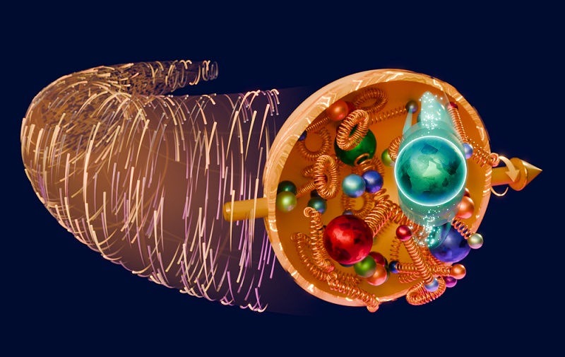

Lattice QCD at Scale
The ASCR/NP LQCD SciDAC Project develops the theoretical methods, software infrastructure, and production workflows needed to extract new physics from lattice quantum chromodynamics on leadership-class computing platforms.
Mission
This project focuses on ambitious theoretical, algorithmic, and software development that enables lattice QCD calculations to exploit leadership-class resources and dedicated hardware. The work advances fundamental studies of hadrons, nuclei, and strongly interacting matter while delivering the computational methods needed for modern large-scale simulations.
The resulting calculations inform heavy-ion experiments at RHIC, spectroscopy programs at CLAS12 and GlueX, hadron and nuclear structure studies at Jefferson Lab and RHIC-spin, and future measurements at the Electron-Ion Collider.
Research pillars
Resolving excited and exotic states with controlled lattice calculations tied to experimental programs.
Mapping the internal dynamics of quarks and gluons in protons, mesons, and light nuclei.
Studying thermodynamics and transport relevant to heavy-ion collisions and neutron-star phenomenology.
Developing multigrid solvers, gauge generation methods, and accelerator-ready implementations.
Featured work

Meson charge-distribution calculations benchmark future measurements and test widely used factorization methods.
Simulations of neutron stars constrain internal pressure and maximum mass through large-scale numerical studies.

Lattice QCD calculations sharpen the interpretation of charmonium-like and exotic XYZ states.

A new theoretical approach improves calculations of the three-dimensional motion of quarks inside the proton.
Explore
Background, scientific motivation, and collaboration goals.
How this effort fits into the broader DOE computational science portfolio.
Participating investigators, institutions, and collaborators.
Peer-reviewed outputs and project-related references.